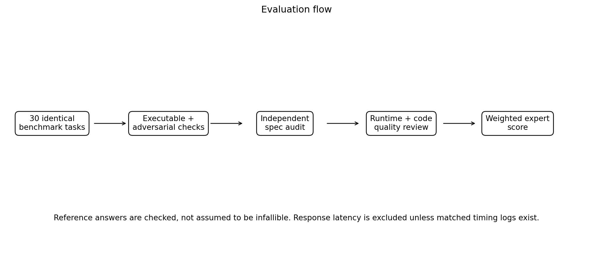
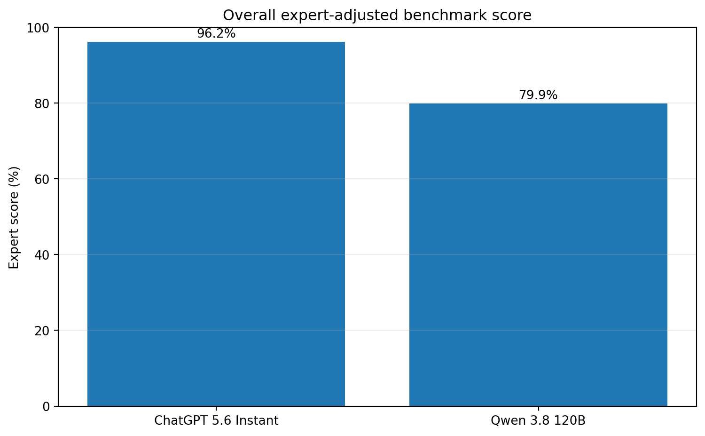
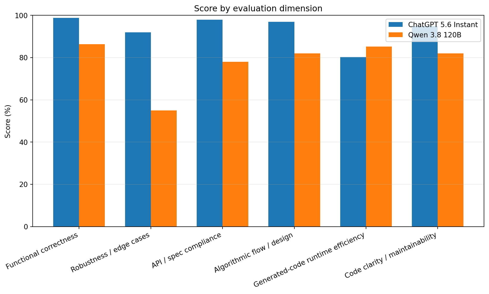
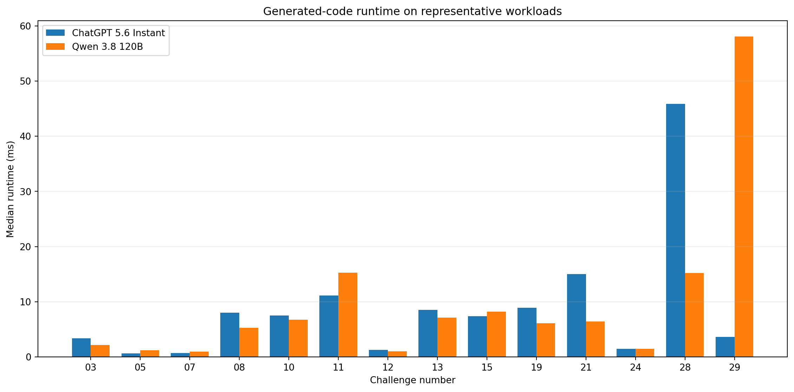
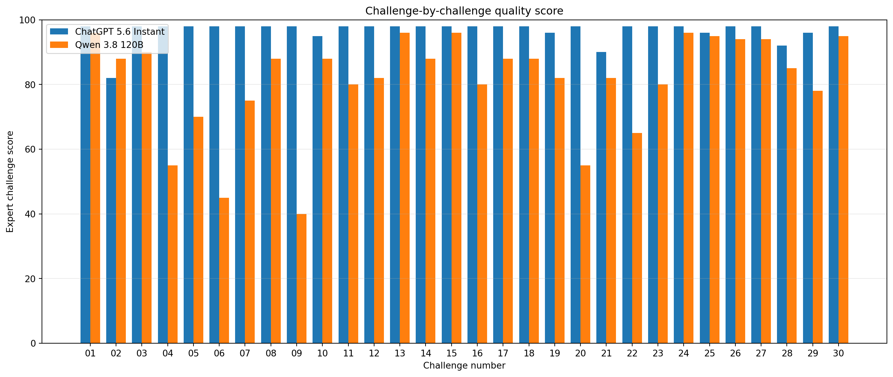

AI-CV Programming Benchmark — Revised Expert Comparison
Two models were evaluated on the same 30 AI/computer-vision programming tasks. This revision does not use raw unit-test pass rate as the final score. The reference implementations were independently audited, adversarial cases were considered, and code quality plus execution efficiency were included.
Model specifications
| Model | Specification used in this comparison | Answers available | Response-generation latency |
|---|---|---|---|
| ChatGPT 5.6 Instant | ChatGPT 5.6, Instant mode. Parameter count not provided in benchmark materials. | 30 / 30 | Not numerically scored: matched latency logs were not supplied. |
| Qwen 3.8 120B | Qwen 3.8, 120B parameters (model description supplied for this benchmark run). | 30 / 30 | Not numerically scored: matched latency logs were not supplied. |
Scoring table
| Dimension | Weight | ChatGPT 5.6 Instant | Qwen 3.8 120B |
|---|---|---|---|
| Functional correctness | 50% | 98.8 | 86.4 |
| Robustness / edge cases | 15% | 92.0 | 55.0 |
| API / spec compliance | 10% | 98.0 | 78.0 |
| Algorithmic flow / design | 10% | 97.0 | 82.0 |
| Generated-code runtime efficiency | 5% | 80.2 | 85.2 |
| Code clarity / maintainability | 10% | 95.0 | 82.0 |
| Overall | 100% | 96.2% | 79.9% |
Why the previous perfect score was removed: the initial evaluator mostly checked the explicit benchmark requirements and reused behavior close to the supplied reference code. A second audit found that the benchmark reference itself contains at least one practical issue: for multi-channel OpenCV letterboxing, a scalar border value does not necessarily populate all channels equally. The revised score therefore treats references as evidence, not as an infallible oracle.
Evaluation flow

Overall and dimension charts


Generated-code execution speed
This is the measured runtime of generated solutions on 14 representative common-case workloads in the same evaluation environment. It is separate from model response-generation latency. Lower time is faster. Because the workloads have different scales, the formal runtime dimension uses a normalized relative index rather than summing milliseconds.

| Challenge | ChatGPT 5.6 Instant ms | Qwen 3.8 120B ms |
|---|---|---|
| AICV-03 | 3.378 | 2.145 |
| AICV-05 | 0.603 | 1.178 |
| AICV-07 | 0.699 | 0.973 |
| AICV-08 | 8.035 | 5.289 |
| AICV-10 | 7.510 | 6.744 |
| AICV-11 | 11.146 | 15.245 |
| AICV-12 | 1.301 | 1.021 |
| AICV-13 | 8.533 | 7.134 |
| AICV-15 | 7.404 | 8.221 |
| AICV-19 | 8.884 | 6.101 |
| AICV-21 | 14.984 | 6.434 |
| AICV-24 | 1.488 | 1.438 |
| AICV-28 | 45.839 | 15.177 |
| AICV-29 | 3.641 | 58.055 |
Code size / maintainability context
| Metric | ChatGPT 5.6 Instant | Qwen 3.8 120B |
|---|---|---|
| Total generated code lines | 829 | 1220 |
| Average lines per solution | 27.6 | 40.7 |
| Median lines per solution | 24.0 | 36.5 |
Important findings
| Model | Challenge | Finding |
|---|---|---|
| ChatGPT 5.6 Instant | AICV-02 | RGB letterbox padding is not fully correct for scalar pad values in OpenCV. |
| ChatGPT 5.6 Instant | AICV-21 | Fractional class IDs can be silently truncated instead of rejected. |
| ChatGPT 5.6 Instant | AICV-28 | NaN scores are not explicitly rejected. |
| Qwen 3.8 120B | AICV-04 | NMS uses inclusive-coordinate +1 geometry although the benchmark defines continuous coordinates. |
| Qwen 3.8 120B | AICV-06 | Largest-component output uses 255 rather than required binary {0,1}. |
| Qwen 3.8 120B | AICV-07 | Negative non-zero mask pixels are not treated as foreground. |
| Qwen 3.8 120B | AICV-09 | The function returns a homography matrix instead of ordered source points. |
| Qwen 3.8 120B | AICV-20 | Zero-distance same-class positives can be discarded incorrectly. |
| Qwen 3.8 120B | AICV-22 | Model-name mismatch and decay-range validation are incomplete. |
| Qwen 3.8 120B | AICV-23 | Gradient accumulation holds several computation graphs, increasing memory usage. |
Challenge-by-challenge expert scores

| ID | Task | Difficulty | ChatGPT 5.6 Instant | Qwen 3.8 120B |
|---|---|---|---|---|
| AICV-01 | Channel-wise Image Normalization | easy | 98 | 96 |
| AICV-02 | Aspect-ratio Preserving Letterbox | easy | 82 | 88 |
| AICV-03 | Pairwise IoU Matrix | easy | 98 | 90 |
| AICV-04 | Non-Maximum Suppression from Scratch | medium | 98 | 55 |
| AICV-05 | Binary Segmentation Metrics | easy | 98 | 70 |
| AICV-06 | Largest Connected Component | easy | 98 | 45 |
| AICV-07 | Morphological Mask Cleanup | easy | 98 | 75 |
| AICV-08 | Sobel Magnitude and Orientation | medium | 98 | 88 |
| AICV-09 | Perspective Rectification from Four Points | medium | 98 | 40 |
| AICV-10 | Bilinear Sampling | medium | 95 | 88 |
| AICV-11 | Depth Map Back-projection | medium | 98 | 80 |
| AICV-12 | Stereo Disparity to Metric Depth | easy | 98 | 82 |
| AICV-13 | Best-fit 3D Plane by SVD | medium | 98 | 96 |
| AICV-14 | 3D Point Projection into a Camera | medium | 98 | 88 |
| AICV-15 | Bounding Box from a Binary Mask | easy | 98 | 96 |
| AICV-16 | Shape-preserving Conv-BN-ReLU Block | easy | 98 | 80 |
| AICV-17 | Binary Focal Loss with Logits | medium | 98 | 88 |
| AICV-18 | Masked Scaled Dot-product Attention | medium | 98 | 88 |
| AICV-19 | Top-k Cosine Retrieval | medium | 96 | 82 |
| AICV-20 | Batch-hard Triplet Loss | hard | 98 | 55 |
| AICV-21 | Fast Multiclass Confusion Matrix | medium | 90 | 82 |
| AICV-22 | Exponential Moving Average Model Update | medium | 98 | 65 |
| AICV-23 | Correct Gradient Accumulation | hard | 98 | 80 |
| AICV-24 | Early Stopping State Machine | medium | 98 | 96 |
| AICV-25 | Selective Parameter Freezing | easy | 96 | 95 |
| AICV-26 | Overlap-averaged Sliding-window Segmentation | hard | 98 | 94 |
| AICV-27 | Detection AP at a Fixed IoU Threshold | hard | 98 | 94 |
| AICV-28 | Deterministic Weighted Box Fusion | hard | 92 | 85 |
| AICV-29 | Greedy Centroid Tracker Assignment | hard | 96 | 78 |
| AICV-30 | LoRA Linear Layer | hard | 98 | 95 |
Interpretation
ChatGPT 5.6 Instant is materially stronger on correctness, requirement compliance and adversarial robustness, but the revised evaluation does not treat it as perfect. Its main identified weakness in the benchmark is the RGB letterbox padding behavior, with smaller robustness issues in class-ID validation and NaN handling.
Qwen 3.8 120B solves many normal-path implementations correctly and its generated code is competitive in execution speed on several workloads. Its lower overall score is mainly caused by specification mismatches and edge-case failures rather than an across-the-board inability to implement the algorithms.
Benchmark construction and possible bias
The initial question pool was prepared with assistance from multiple cloud chatbots and DeepSeek, then reviewed and filtered to favor general AI/CV programming tasks. This process can still introduce question-author bias, reference-answer bias, and judge/evaluation bias. The reported percentages should therefore be interpreted as results on this benchmark rather than universal model accuracy.
How the evaluation should be interpreted
The scoring structure remains unchanged: functional correctness (50%), robustness/edge cases (15%), API/specification compliance (10%), algorithmic flow/design (10%), generated-code runtime efficiency (5%), and code clarity/maintainability (10%). Evaluation was not based only on literal similarity to a reference solution. Reference implementations were treated as evaluation aids and reviewed separately when their behavior appeared questionable.
Serving conditions and response latency
The two systems were not served under equivalent infrastructure. Qwen 3.8 120B was run on constrained/self-hosted hardware, and long reasoning made several tasks slow. Some missing answers required a recovery run with a tighter generation budget and reduced/disabled thinking. ChatGPT 5.6 Instant was accessed through cloud infrastructure. For this reason, model response-generation latency is not included as a formal numeric comparison. The runtime dimension in this report refers only to execution efficiency of generated code.
Planned cross-evaluation
A follow-up experiment will use cross-authored question sets: questions authored from the ChatGPT side will be answered by Qwen, and questions authored from the Qwen side will be answered by ChatGPT. The goal is to reduce question-author, reference, and judge bias and to test whether the observed ranking remains stable after reversing question authorship.
Limitations
The final numbers are benchmark-specific expert scores, not universal measures of model intelligence. Response-generation latency is intentionally not assigned a numeric score because equivalent timing logs for both models were not available. Execution-speed measurements should be read as relative microbenchmarks in this environment.